Это мой мир. Здесь происходят приключения, рождаются секреты, появляются лучшие друзья и иногда случается настоящий школьный хаос.
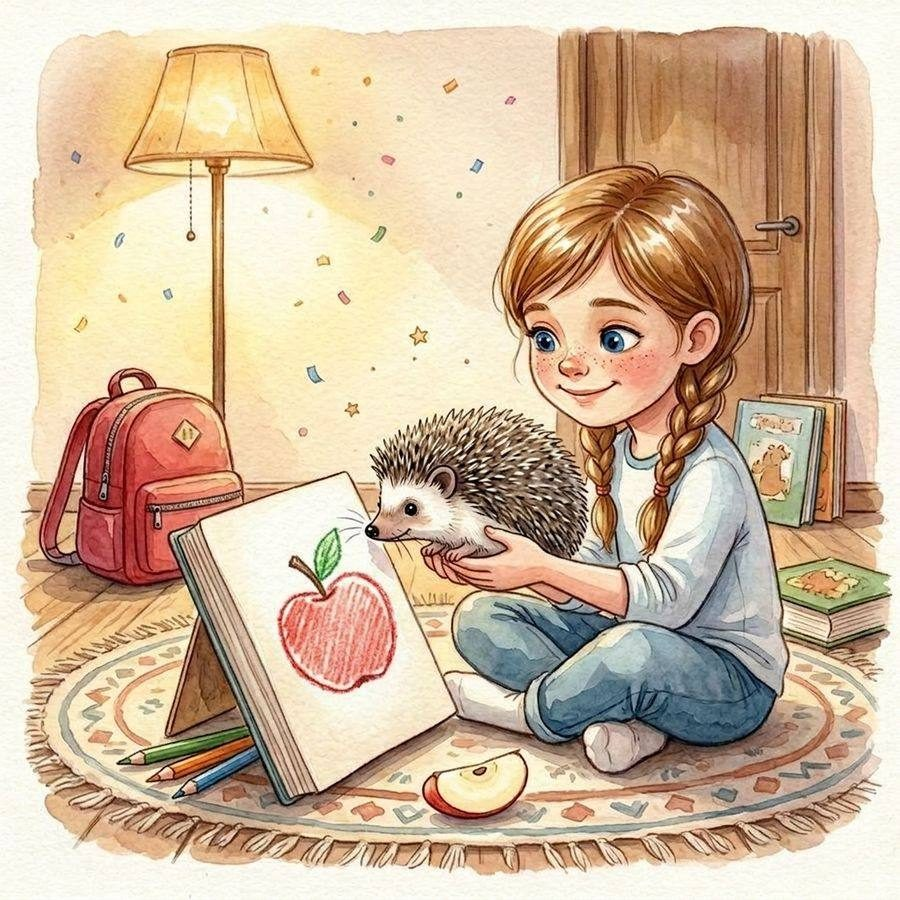
7 лет и один КоричкаЯ задаю очень много вопросов. Взрослые говорят, что слишком. Но как ещё узнать, почему луна идёт за нами до самого дома?
Придумывать истории, задавать вопросы, приключения.
Скучать и когда взрослые говорят: «Потом».
Замечать то, чего другие не замечают.
Коричка. Ёжик, который однажды уехал со мной в школу.
Шесть мест, где всё происходит. Загляни в любое — там всегда что-то случилось.
Зима пришла — а вместе с ней вторая тетрадка Маруси. Новогодний праздник в классе, спектакль, где Вова стал самым громким Дедом Морозом на свете, снежинки, похожие на картошку, и снежная крепость, которая стала настоящим замком.
160 страниц · 148×210 мм · для младшего школьного возраста
890 ₽
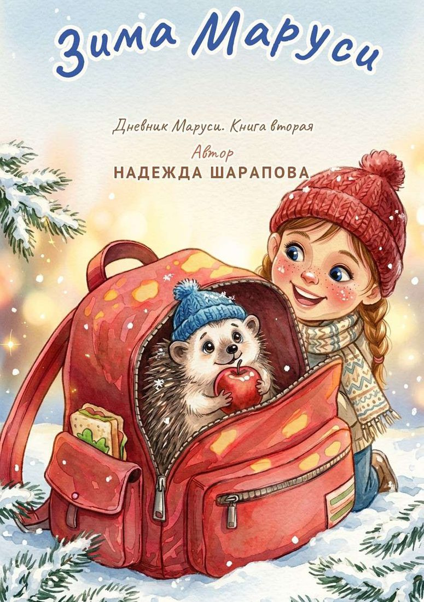
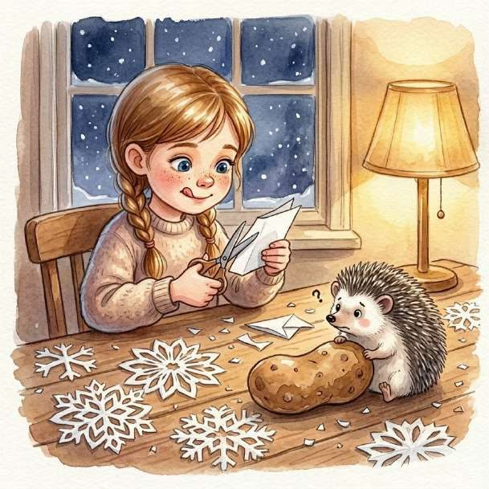
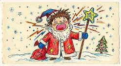
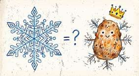
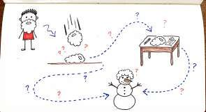
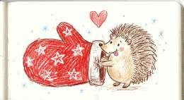
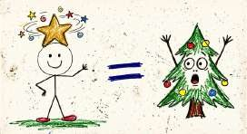
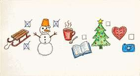
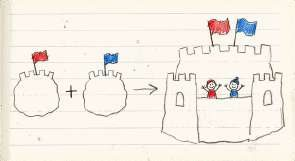
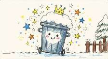
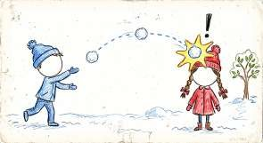
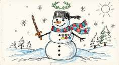
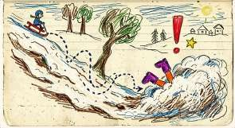
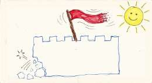
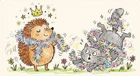
Так Маруся рисует на полях своего дневника
Дневник начинается там, где заканчивается книга. Внутри — вопросы, анкеты, задания, страницы для рисунков и один секретный разворот, о котором знаешь только ты.
Так будет выглядеть разворот дневника-анкеты «Мой дневник как у Маруси». Готовим к выпуску.
«Мир Маруси» — это детский бренд, объединяющий книги для девочек 6, 7, 8 и 9 лет, дневники-анкеты, раскраски, workbook с развивающими заданиями, игры и подарочные наборы. В центре — героиня Маруся и её талисман Коричка.
Родителям мы помогаем выбрать книгу по возрасту: для 6–7 лет — короткие главы и крупный шрифт, для 8–9 лет — более объёмные истории, логические задания и творческие тетради. Детский дневник и дневник-анкета для девочки развивают письменную речь и умение говорить о чувствах, раскраска для девочки — моторику и внимание, а workbook для детей — логику и фантазию.